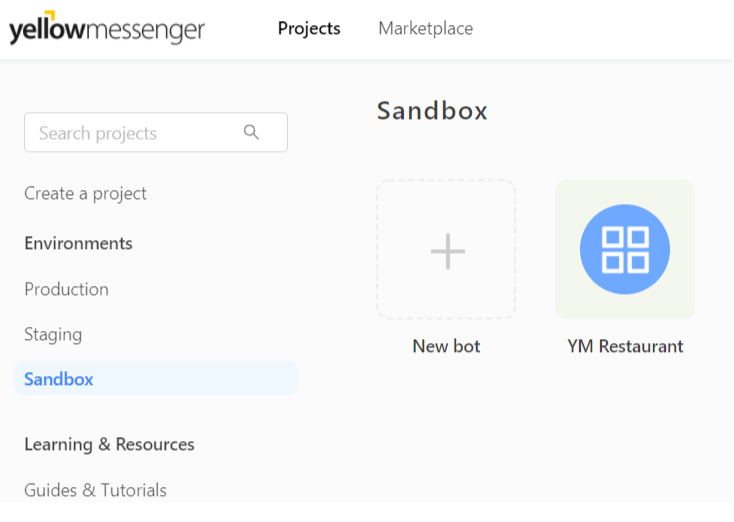

- To build your own bot, please sign up on https://hackathon.yellowmessenger.com

- Alternatively, you can also opt for SSO using any other account of your choice. Yellow Messenger currently supports,
- Outlook
- GitHub
Once Signed up, verify your account by checking your inbox for an email (check the spam folder).
- In the verification email, check for the bot token
- Copy the Token
- Click on ‘Get Started'
Make you've copied the bot token.
- On http://hackathon.yellowmessenger.com go to SandBox and click ‘New Bot'.
- Give a Name to your Bot, Copy past the Bot Token from the email.
And yes, your bot is ready!
